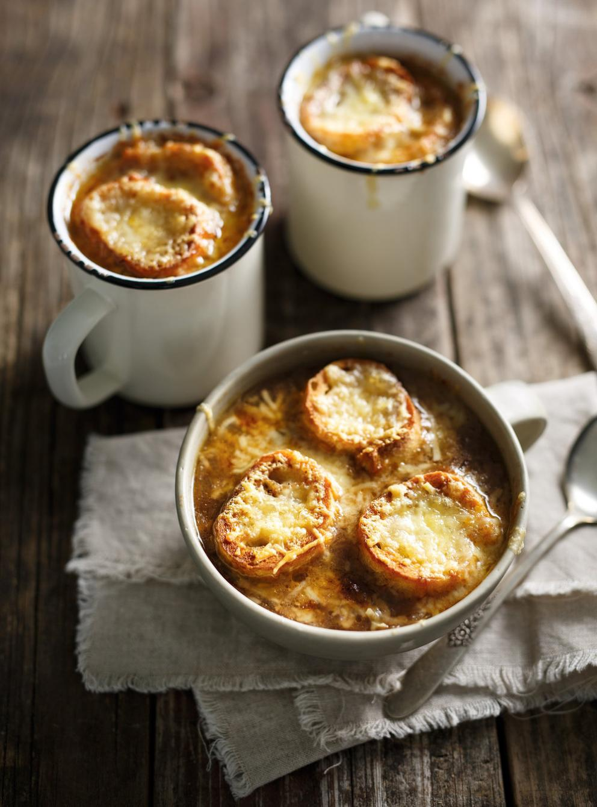

The Best Onion Soup

During long cold day during winter, there is nothing better than a warm onion soup. And good for you, because this one is the best you can make. Here how to do it step by step.
Ingredients (4 people)
Soup
- 6 yellow onions, peeled
- 55 g (1/4 cup) butter
- 125 ml (1/2 cup) of red wine
- 30 ml (2 tbsp) of cognac or brandy
- 1 liter (4 cups) of beef broth
- 1 liter (4 cups) of chicken broth
- 15 ml (1 tbsp) of light toasted flour
- 1 pinch of ground nutmeg
Trim
- 200 g (2 cups) of grated Gruyère cheese
- 12 slices of baguette bread, about 1 cm (1/2 in) thick, toasted
- 1 small garlic clove, halved
Steps
- Cut the onions into quarters, then slice each quarter into short strips.
- In a large saucepan over medium heat, soften the onions in butter for 15 minutes, stirring occasionally. Continue cooking over high heat for 15 minutes, or until the onions are caramelized, stirring constantly and scraping up any browned bits from the bottom of the pan. Deglaze with the wine and cognac. Reduce until almost dry. Add the chicken and beef broths, toasted flour, and nutmeg. Mix well.
- Bring to a boil and simmer over medium-high heat for 30 minutes, or until the soup has reduced by half. You will have about 1.25 liters (5 cups) of broth. Season with salt and pepper.
Trim
- Place the oven rack in the center of the oven. Preheat the oven to broil. Place 4 bowls on a baking sheet.
- Meanwhile, lightly rub each crouton with the garlic cloves.
- Ladle the soup into the bowls and add 30 ml (2 tbsp) of cheese per bowl. Divide 3 croutons over each soup and sprinkle with the remaining cheese.
- Bake for 5 minutes or until the cheese is melted and golden.
Home